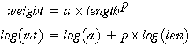

Transforming Weight for Constant Variance
We previously transformed slug length to linearise the relationship. However transforming an explanatory variable cannot fix problems with non-constant variance. In order to obtain constant variance, the response variable must be transformed.
(Section 1.8.3 of the CAST e-book about regression gives more detail about how transforming the response fixes the problem of non-constant variance.)
We initially thought that slug weight might be proportional to (length)3. This can be generalised and rewritten as follows:

If this model holds, log(wt) will be linearly related to log(len). Indeed, this model will allow us to test whether the appropriate power is p = 3.
We will use logarithms to the base 10 here since they are slightly easier to understand for non-mathematicians, but natural logarithms (base e) could be used everywhere instead. The main change would be in the labelling on the axes.